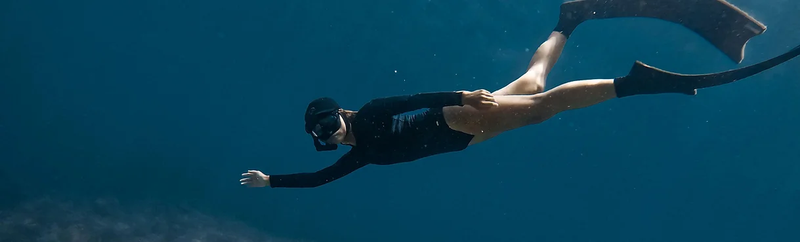
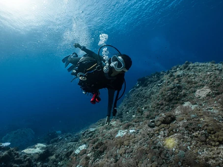
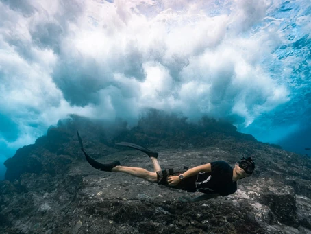
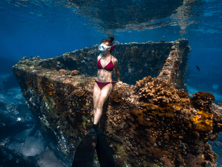

潛水旅遊攻略
探索潛水＆自由行旅遊靈感

Nora Chen
2月3日
【2024 綠島潛水】潛點推薦 / 浮潛 / 自潛 / 水肺潛水懶人包
被譽為世界級潛水勝地的綠島，豐富的海底地形以及溫暖黑潮流經，形成壯觀的海底生態景緻，綠島以擁有能見度30米以上的玻璃海聞名，陽光灑落在五顏六色的珊瑚礁上！無論是潛水或浮潛，一生絕對要來綠島一次！ 今天來跟大家介紹綠島有哪些推薦潛點、潛水行程以及注意事項～ 綠島潛水地圖...

Nora Chen
2月3日
【2024自由潛水考照】初學者的自潛常見問題 Q&A
：「想學潛水會推薦自潛還是水肺呢？」 ：「不會游泳，可以學潛水嗎？」 ：「AIDA2要閉氣2分鐘，沒辦法閉那久怎麼辦？」 常常在IG或Line收到關於自由潛水的疑問，今天整理了一些自由潛水常見問題，希望能夠幫助想接觸大海的人更加了解自由潛水~~ Q1...

Nora Chen
2月3日
【2024綠島潛水】6個綠島必去潛點指南，自由潛水打卡推薦！
綠島被譽為全球百大潛點，去綠島絕對不能錯過海裡豐富的生態資源，出發前可以先看看有哪些自由潛水、水肺潛水都推薦的潛點 綠島由於黑潮潮流經，水中雜質少，能見度平均是30米以上，成群熱帶魚與珊瑚礁地形，更讓綠島被許多潛水員列入人生必潛的勝地之一 ➤ 預訂綠島自由潛水導潛...